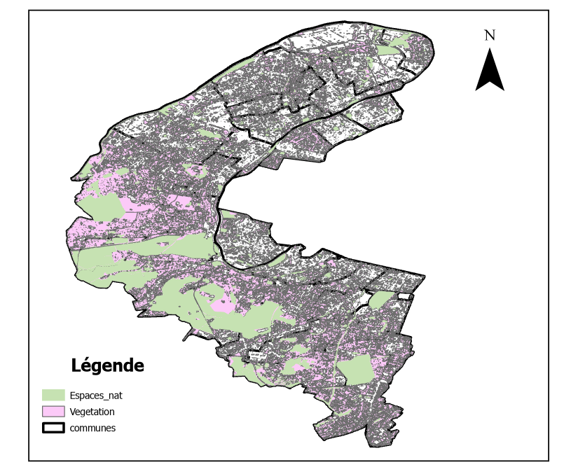
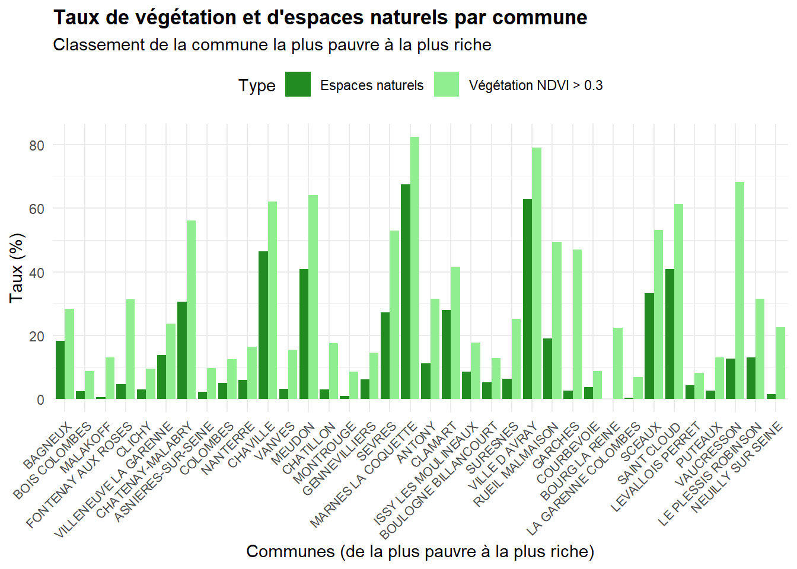

Nom du groupe : maleug
Composition du groupe :
Sujet du projet : Les espaces verts et la végétation sont-ils un marqueur socio-économique ? Cas du département des Hauts-de-Seine
Résultats de l’étude:
1- RÉPARTITIONS DES ESPACES VERTS ET DE LA VÉGÉTATION AU NIVEAU DES HAUTS-DE-SEINE:

2-CLASSEMENT DES COMMUNES DE LA PLUS RICHE A LA PLUS PAUVRE SUIVANT LE TAUX DE RICHESSE :
| Indice de richesse | Commune | Revenu médian (€) | Dépenses/hab. 2024 (€) |
|---|---|---|---|
| 77.5 | Neuilly-sur-Seine | 48 010 | 3 094.4 |
| 71.3 | Le Plessis-Robinson | 31 000 | 4 959.6 |
| 64.6 | Vaucresson | 41 320 | 2 958.5 |
| 62.3 | Puteaux | 30 980 | 4 212.2 |
| 54.9 | Levallois-Perret | 34 500 | 3 109.0 |
| 52.0 | Saint-Cloud | 39 760 | 2 129.9 |
| 50.0 | Sceaux | 36 010 | 2 489.2 |
| 45.8 | La Garenne-Colombes | 33 090 | 2 549.3 |
| 45.7 | Bourg-la-Reine | 33 700 | 2 460.1 |
| 45.3 | Courbevoie | 32 080 | 2 651.1 |
| 45.0 | Garches | 36 150 | 2 058.3 |
| 44.6 | Rueil-Malmaison | 32 980 | 2 463.2 |
| 42.4 | Ville-d’Avray | 38 490 | 1 510.9 |
| 41.7 | Suresnes | 31 810 | 2 389.7 |
| 40.5 | Boulogne-Billancourt | 35 040 | 1 841.4 |
| 40.2 | Issy-les-Moulineaux | 33 650 | 2 004.9 |
| 39.7 | Clamart | 29 920 | 2 487.4 |
| 39.6 | Antony | 32 000 | 2 190.8 |
| 39.4 | Marnes-la-Coquette | 41 740 | 810.9 |
| 39.0 | Sèvres | 33 680 | 1 900.9 |
| 37.8 | Gennevilliers | 18 380 | 3 949.5 |
| 37.4 | Montrouge | 30 500 | 2 220.3 |
| 37.3 | Châtillon | 30 550 | 2 204.8 |
| 34.4 | Meudon | 30 680 | 1 941.8 |
| 33.2 | Vanves | 30 770 | 1 834.3 |
| 33.0 | Chaville | 32 290 | 1 599.7 |
| 30.7 | Nanterre | 21 620 | 2 904.1 |
| 30.1 | Colombes | 25 100 | 2 369.7 |
| 29.1 | Asnières-sur-Seine | 28 370 | 1 825.7 |
| 28.2 | Châtenay-Malabry | 27 140 | 1 926.8 |
| 27.5 | Clichy | 22 410 | 2 525.6 |
| 27.5 | Villeneuve-la-Garenne | 18 570 | 3 067.0 |
| 26.2 | Fontenay-aux-Roses | 26 990 | 1 782.9 |
| 26.2 | Malakoff | 25 810 | 1 941.8 |
| 20.5 | Bois-Colombes | 21 040 | 2 137.3 |
| 19.9 | Bagneux | 21 040 | 2 093.1 |
| Commune | Taux de Végétation (%) | Taux d’Espaces Verts (%) |
|---|---|---|
| MARNES LA COQUETTE | 92.34 | 67.64 |
| VILLE D AVRAY | 90.50 | 62.87 |
| VAUCRESSON | 88.31 | 12.58 |
| CHAVILLE | 80.78 | 46.41 |
| MEUDON | 79.56 | 40.84 |
| SAINT CLOUD | 78.68 | 40.83 |
| GARCHES | 77.61 | 2.46 |
| SCEAUX | 77.51 | 33.35 |
| CHATENAY-MALABRY | 77.31 | 30.62 |
| SEVRES | 75.37 | 27.19 |
| RUEIL MALMAISON | 72.84 | 18.99 |
| FONTENAY AUX ROSES | 63.77 | 4.73 |
| CLAMART | 62.44 | 27.94 |
| ANTONY | 61.28 | 11.14 |
| LE PLESSIS ROBINSON | 54.68 | 13.12 |
| BOURG LA REINE | 54.66 | NA |
| BAGNEUX | 52.47 | 18.29 |
| SURESNES | 49.89 | 6.43 |
| NEUILLY SUR SEINE | 44.68 | 1.51 |
| VILLENEUVE LA GARENNE | 42.63 | 13.72 |
| CHATILLON | 41.72 | 2.94 |
| NANTERRE | 37.65 | 5.99 |
| ISSY LES MOULINEAUX | 36.79 | 8.61 |
| COLOMBES | 36.69 | 5.03 |
| BOIS COLOMBES | 35.95 | 2.25 |
| VANVES | 34.73 | 3.24 |
| MALAKOFF | 34.11 | 0.59 |
| BOULOGNE BILLANCOURT | 30.93 | 5.14 |
| ASNIERES-SUR-SEINE | 29.71 | 2.20 |
| LA GARENNE COLOMBES | 29.70 | 0.31 |
| GENNEVILLIERS | 29.36 | 6.18 |
| PUTEAUX | 28.50 | 2.56 |
| COURBEVOIE | 26.84 | 3.70 |
| MONTROUGE | 26.58 | 0.95 |
| CLICHY | 22.84 | 3.01 |
| LEVALLOIS PERRET | 19.48 | 4.28 |
